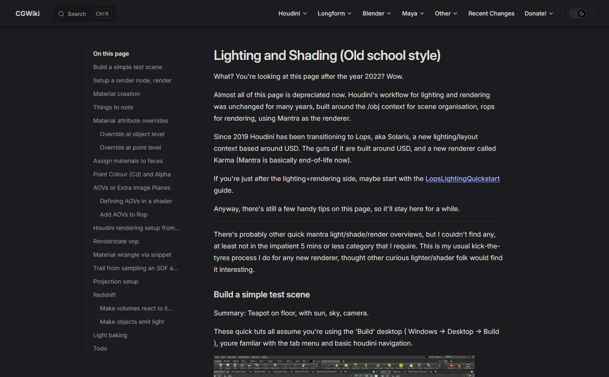

Matt Estela氏のCGWikiにある、Mantraを使ったHoudiniの旧来のライティング・シェーディングのワークフローをまとめたページ。テストシーンの作り方、マテリアルの作成と属性によるオーバーライド、AOV（Extra Image Planes）、Renderstate VOP、HDRIを使ったプロジェクション、Redshift、ライトのベイクまでを短いメモ形式で扱っている。
Lighting and Shading (Old school style)（CGWiki）
https://tokeru.com/cgwiki/Houdini_Lighting_Shading.html
CGWiki（Matt Estela氏のHoudiniとCGのメモ）
https://tokeru.com/cgwiki/